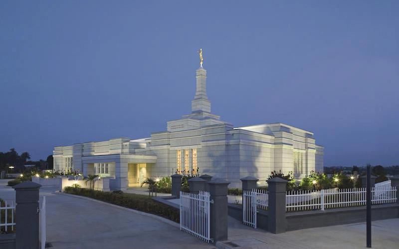

Temple Album
☰
Home
Old
New
Large
Small
Temple Album - Home
Featured Temples

Aba, Nigeria
Oquirrh Mountain, United States
Albuquerque, United States
Arequipa, Peru
Bern, Switzerland
Bountiful Utah Temple, United States
Payson Utah Temple, United States
Portland Oregon Temple, United States
Calgary Alberta Temple, Canada